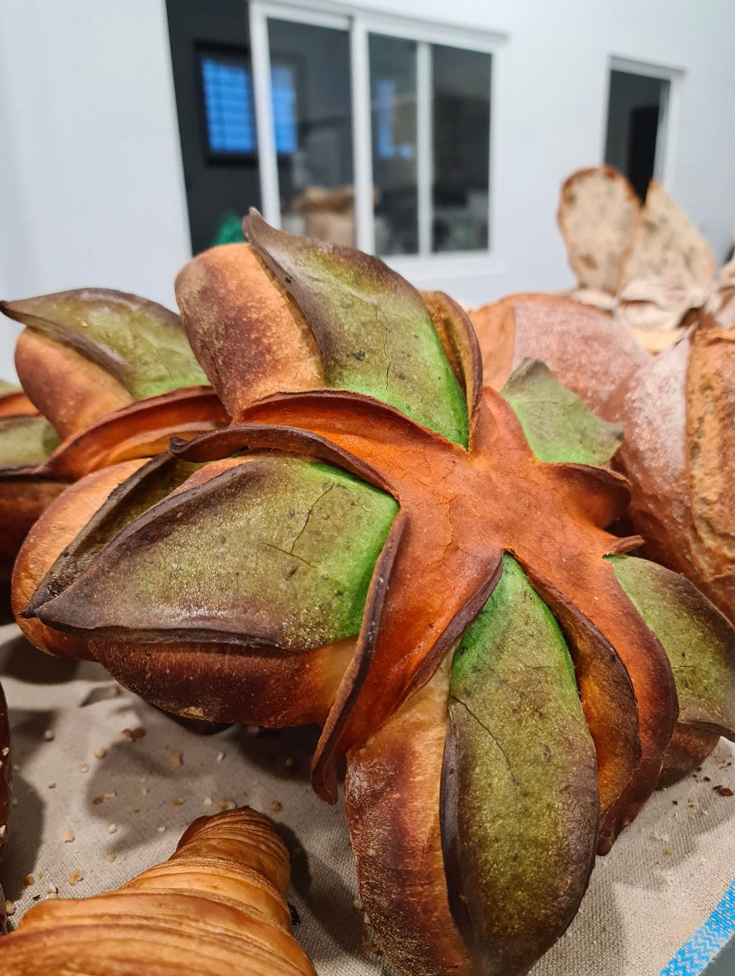
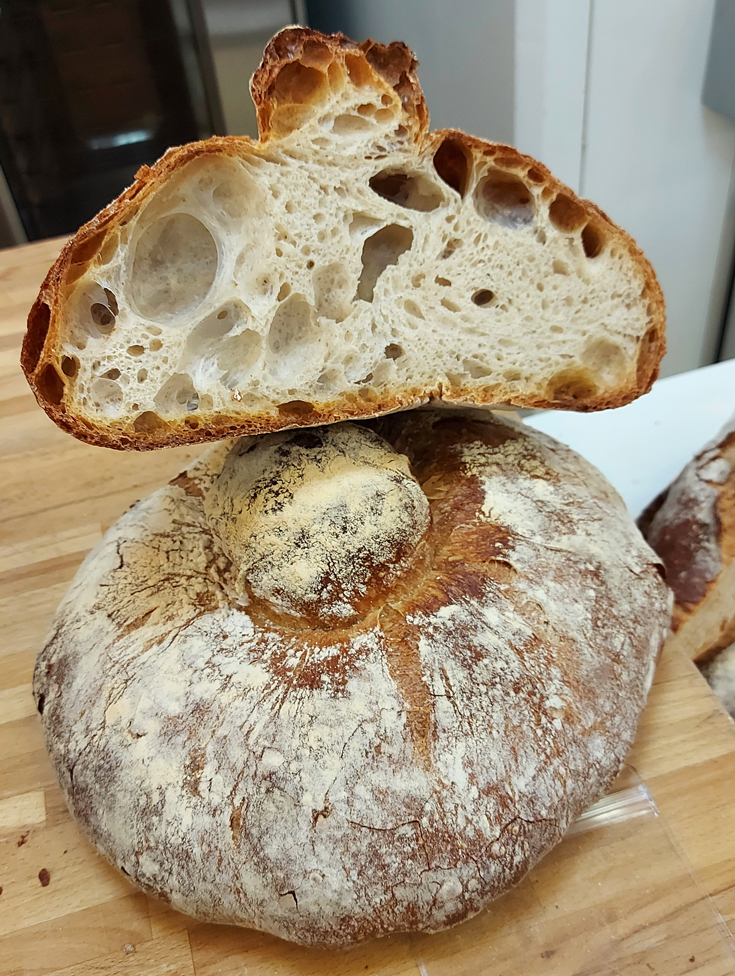
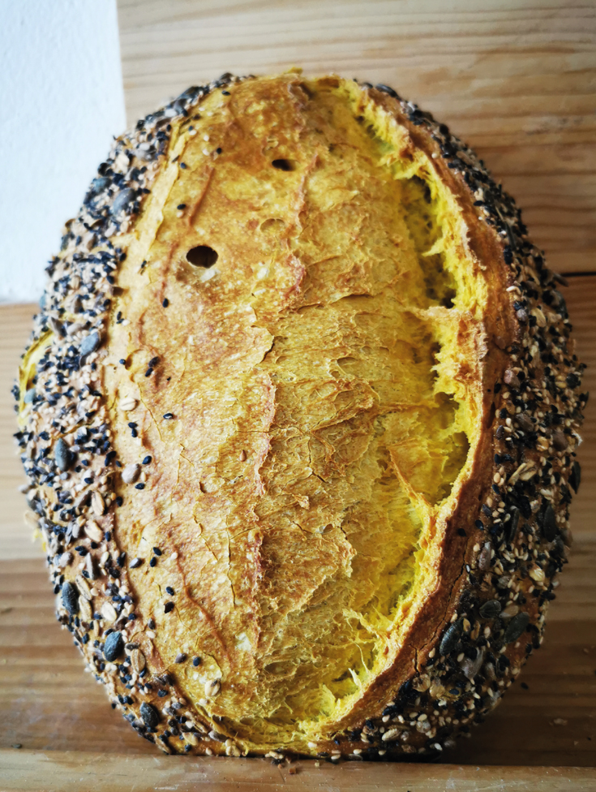

PANES
 |
Pavé masa madre 100%Pavé de cereales de larga fermentación elaborado 100% con Masa Madre |
|  |
Pan CanarioPan canario de papas arrugas a los dos mojos |
|  |
Pan GallegoPan de corteza dorada y greñado suave |
|  |
Pan de curcumaPan de trigo ecológico con cúrcuma y semillas |
 |
Pan de moldePan de molde de verduras de cuatro masas y amapola |